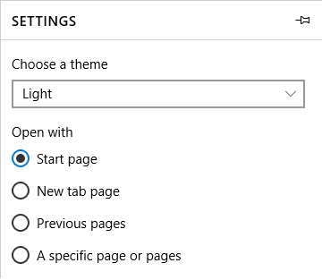

Radio buttons for this platform function similarly to the typical radio button. Its marked difference from previous OSX versions is its aesthetics.
As seen from the picture below, the colors for the radio buttons are flatter and brighter with less highlighting and shadow, a brighter blue and more emphasis on white.
Microsoft sets some strict guidelines on the use of radio buttons. First and most importantly, radio buttons should only be used with two or mutually exclusive options. They should be used in the place of a drop down list when most or all of the options are important enough to take up screen space. In instances where the default option will be selected by the majority of users than you should use a drop-down menu instead. In general, there is not much difference between Windows 10 radio buttons and others, although Windows does make the choice to change the cursor to indicate hovering over the button as opposed to affecting the button itself.

This image shows the design of Windows 10 radio buttons. The selected button is shown by changing the color of the outer circle, and filling the concentric circle with black. These colors can be changed. Also note that each button's description is only one line long and uses sentence case. You can also see drop-down lists being used for less impactful features.

This image shows a desired way to seperate radio buttons. The different labels make it clear that the two sets are distinct, and that selecting from Background will not affect BorderBrush. Microsoft makes it clear that a developer must distinct different sets of buttons, as the mutually exclusive nature is prone to errors if the mental model of the user does not match the system image.
In the GNOME Human Interaction Guidelines, a radio button is defined as, "Radio buttons are used in groups to select from a mutually exclusive set of options. Only one radio button within a group may be set at any one time. As with check boxes, do not use radio buttons to initiate actions." Notable things mentioned in the GNOME HIG for radio buttons include to place the radio buttons directly to the left of anything they are immediatley affecting, using sentence capatilization for the button labels, setting an access key in the label allowing for selection from keyboard, not to place more than eight radio buttons in the same grouping, and to align them vertically.
The GNOME Radio Buttons also includes a mixed state. This is used in situations when the radio buttons are in a multiselection grouping. Which, is against the idea of a radio button for most platforms.


These two images show examples of GNOME Radio Buttons, the left is found in the GNOME HIG and the right is found in the GTK+ API documentation. The model on the left has the current and modern design of GNOME included in GNOME 3 and includes a button in it's mixed state, where as the left is likely an example from GNOME 2.
In the Ubuntu Design Guidelines, the developers state that they believe radio buttons should be placed to the left of its corresponding label, with a 5px space between the input field and the label. The input field should align vertically with the preceding and subsequent input fields. Ubuntu's developers also took a more minimalistic approach, stating that ideally, radio buttons should use default browser styling.

Note the 5px gap between label and button, and the basic styling. Ubuntu believes the only deviations in style should be when they enhance usability and don’t hamper accessibility.


{kind=link}